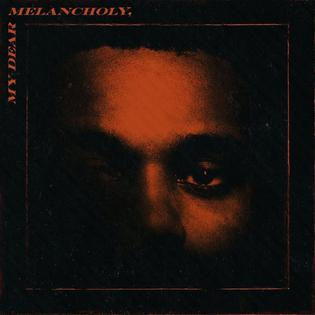

Starboy
Starboy is the third studio album by Canadian singer the Weeknd, released on November 25, 2016, through XO and Republic Records. It features guest appearances from Daft Punk, Lana Del Rey, Kendrick Lamar, and Future.
Home
Other Songs
Faivorite song
Sing Up
Sign In

After House
Kissland
Trilogy
Beauty Behind The Madness
My Dear Melancholy
Made By TechCamp Students